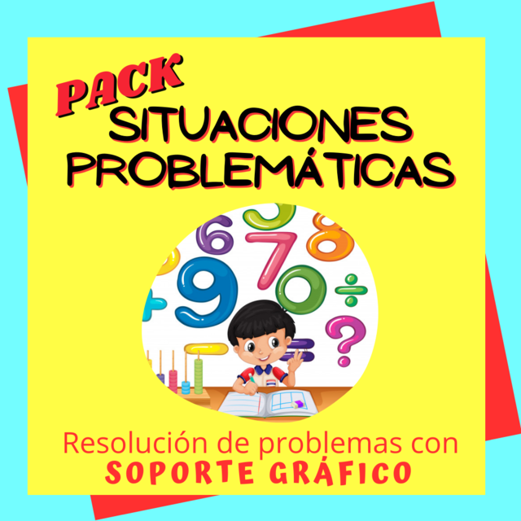

SOPORTE GRÁFICO
Saber mantener la atención
El soporte gráfico educativo es una herramienta crucial en el proceso de enseñanza y aprendizaje, ya que potencia la comprensión, la retención de información y el interés de los estudiantes. A través de representaciones visuales, gráficos, imágenes y diagramas, el contenido educativo se vuelve más accesible y atractivo. Por un lado, el soporte gráfico simplifica conceptos complejos al presentarlos de manera visual, lo que facilita la comprensión, especialmente para los estudiantes visuales y kinestésicos. Por otro lado, estimula la memoria al asociar información con imágenes, colores y patrones, lo que hace que sea más fácil recordar y aplicar conceptos. Dos ejemplos de soportes gráficos educativos efectivos son:
- Infografías Educativas: Las infografías son representaciones visuales que resumen información clave de manera concisa y atractiva. Son ideales para presentar datos, estadísticas, procesos y hechos históricos de una manera que los estudiantes pueden asimilar rápidamente. Las infografías son populares en áreas como ciencias sociales, historia y ciencias naturales, ya que simplifican la información sin sacrificar la precisión.
- Presentaciones Multimedia: Las presentaciones multimedia, como diapositivas de PowerPoint o Prezi, permiten a los educadores combinar texto, imágenes, gráficos y videos para crear lecciones interactivas y envolventes. Estas presentaciones son útiles en una variedad de materias, desde matemáticas y ciencias hasta literatura y música. Al incorporar elementos visuales y auditivos, se atienden diferentes estilos de aprendizaje, y se mantiene el interés de los estudiantes.
En resumen, el soporte gráfico educativo es una herramienta invaluable que mejora la comprensión y la retención de información, al mismo tiempo que hace que el proceso de aprendizaje sea más atractivo y dinámico. La combinación de texto y elementos visuales enriquece la experiencia educativa y se adapta a las diversas necesidades de los estudiantes.